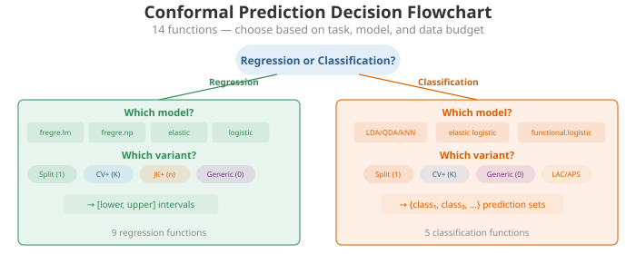
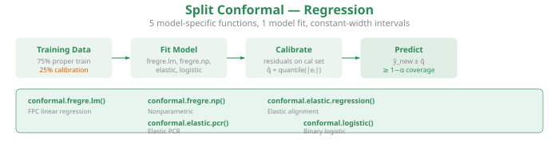
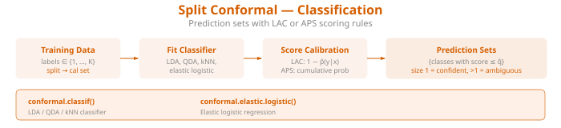
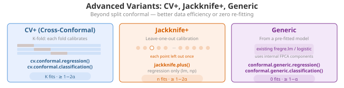
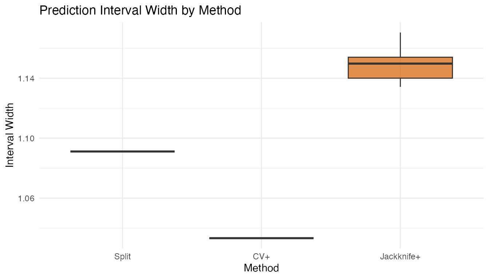

Conformal Prediction Guide
Source:vignettes/articles/conformal-prediction-guide.Rmd
conformal-prediction-guide.RmdOverview
fdars provides 14 conformal prediction functions covering regression, classification, and elastic models. This guide helps you choose the right function for your problem and summarizes the available options.
All conformal methods share the same guarantee: for coverage level ,
holds for any data distribution, with no parametric assumptions.
Decision Flowchart

Choose your conformal method based on three questions:
1. Regression or classification?
- Regression (predict a number ) prediction intervals
- Classification (predict a label ) prediction sets
2. Which base model?
| Model | Regression | Classification |
|---|---|---|
fregre.lm |
conformal.fregre.lm() |
— |
fregre.np |
conformal.fregre.np() |
— |
| Elastic regression | conformal.elastic.regression() |
— |
| Elastic PCR | conformal.elastic.pcr() |
— |
| LDA / QDA / kNN | — | conformal.classif() |
| Logistic | conformal.logistic() |
conformal.elastic.logistic() |
3. How much data can you afford?
| Variant | Data use | # fits | Guarantee | Function suffix |
|---|---|---|---|---|
| Split | Wastes calibration fraction | 1 | model-specific | |
| CV+ | All data used | folds | cv.conformal.*() |
|
| Jackknife+ | All data used | LOO fits | jackknife.plus() |
|
| Generic | Pre-fitted model | 0 | conformal.generic.*() |
Complete Function Reference
Split Conformal — Regression

Each function takes training fdata, response
y, test fdata, and returns prediction
intervals.
| Function | Model | Key parameters |
|---|---|---|
conformal.fregre.lm() |
FPC linear |
ncomp, cal.fraction
|
conformal.fregre.np() |
Nonparametric |
ncomp, cal.fraction
|
conformal.elastic.regression() |
Elastic regression |
ncomp, cal.fraction
|
conformal.elastic.pcr() |
Elastic PCR |
ncomp, cal.fraction
|
conformal.logistic() |
Logistic (binary) |
ncomp, cal.fraction
|
All return: predictions, lower,
upper, residual.quantile,
coverage.
Split Conformal — Classification

| Function | Model | Key parameters |
|---|---|---|
conformal.classif() |
LDA, QDA, kNN |
classifier, score.type
|
conformal.elastic.logistic() |
Elastic logistic |
score.type, cal.fraction
|
Returns: predicted_classes, set_sizes,
average_set_size, coverage,
score_quantile.
Cross-Conformal (CV+)

| Function | Task | Key parameters |
|---|---|---|
cv.conformal.regression() |
Regression |
method (“fregre.lm” or “fregre.np”),
n.folds
|
cv.conformal.classification() |
Classification |
classifier, score.type,
n.folds
|
Jackknife+
| Function | Task | Key parameters |
|---|---|---|
jackknife.plus() |
Regression |
method (“fregre.lm” or “fregre.np”) |
Generic Conformal (pre-fitted model)
| Function | Task | Input model |
|---|---|---|
conformal.generic.regression() |
Regression | Fitted fregre.lm object |
conformal.generic.classification() |
Classification | Fitted functional.logistic object |
Quick Examples
Regression: Split vs CV+ vs Jackknife+
set.seed(42)
n <- 80; m <- 50
t_grid <- seq(0, 1, length.out = m)
X <- matrix(0, n, m)
for (i in 1:n) X[i, ] <- sin(2 * pi * t_grid) + rnorm(m, sd = 0.1)
y <- rowMeans(X) + rnorm(n, sd = 0.3)
fd_train <- fdata(X[1:60, ], argvals = t_grid)
fd_test <- fdata(X[61:80, ], argvals = t_grid)
y_train <- y[1:60]; y_test <- y[61:80]
# Split conformal
split_res <- conformal.fregre.lm(fd_train, y_train, fd_test,
ncomp = 3, alpha = 0.10, seed = 42)
# CV+ conformal
cv_res <- cv.conformal.regression(fd_train, y_train, fd_test,
method = "fregre.lm", ncomp = 3,
n.folds = 5, alpha = 0.10, seed = 42)
# Jackknife+
jk_res <- jackknife.plus(fd_train, y_train, fd_test,
method = "fregre.lm", ncomp = 3, alpha = 0.10)
# Compare widths
cat("Split mean width: ", round(mean(split_res$upper - split_res$lower), 4), "\n")
#> Split mean width: 1.0911
cat("CV+ mean width: ", round(mean(cv_res$upper - cv_res$lower), 4), "\n")
#> CV+ mean width: 1.0333
cat("Jackknife+ mean width:", round(mean(jk_res$upper - jk_res$lower), 4), "\n")
#> Jackknife+ mean width: 1.1484
df_width <- data.frame(
Method = rep(c("Split", "CV+", "Jackknife+"), each = 20),
Width = c(split_res$upper - split_res$lower,
cv_res$upper - cv_res$lower,
jk_res$upper - jk_res$lower)
)
df_width$Method <- factor(df_width$Method, levels = c("Split", "CV+", "Jackknife+"))
ggplot(df_width, aes(x = .data$Method, y = .data$Width, fill = .data$Method)) +
geom_boxplot(alpha = 0.7) +
scale_fill_manual(values = c("Split" = "#2E8B57", "CV+" = "#4A90D9",
"Jackknife+" = "#D55E00")) +
labs(title = "Prediction Interval Width by Method",
y = "Interval Width") +
theme(legend.position = "none")
Classification: Split vs CV+
set.seed(42)
n_cl <- 60; m_cl <- 50
t_cl <- seq(0, 1, length.out = m_cl)
X_cl <- matrix(0, n_cl, m_cl)
for (i in 1:30) X_cl[i, ] <- sin(2 * pi * t_cl) + rnorm(m_cl, sd = 0.2)
for (i in 31:60) X_cl[i, ] <- cos(2 * pi * t_cl) + rnorm(m_cl, sd = 0.2)
y_cl <- rep(1:2, each = 30)
fd_cl_train <- fdata(X_cl[c(1:25, 31:55), ], argvals = t_cl)
fd_cl_test <- fdata(X_cl[c(26:30, 56:60), ], argvals = t_cl)
y_cl_train <- y_cl[c(1:25, 31:55)]
# Split conformal classification
split_cl <- conformal.classif(fd_cl_train, y_cl_train, fd_cl_test,
ncomp = 3, classifier = "lda",
score.type = "lac", alpha = 0.10, seed = 42)
# CV+ conformal classification
cv_cl <- cv.conformal.classification(fd_cl_train, y_cl_train, fd_cl_test,
ncomp = 3, classifier = "lda",
score.type = "lac", n.folds = 5,
alpha = 0.10, seed = 42)
cat("Split avg set size:", round(split_cl$average_set_size, 2), "\n")
#> Split avg set size: 2
cat("CV+ avg set size: ", round(cv_cl$average_set_size, 2), "\n")
#> CV+ avg set size: 3Practical Guidance
Sample Size Requirements
-
Split conformal: needs enough calibration data for
a reliable quantile. With
cal.fraction = 0.25and , you have 25 calibration points. Rule of thumb: (e.g., for ). - CV+: works well with smaller since all data contributes. Effective with .
- Jackknife+: most data-efficient but requires model fits. Practical for .
Computational Cost
| Method | Model fits | Relative cost |
|---|---|---|
| Split | 1 | Fastest |
| Generic | 0 (pre-fitted) | Fastest |
| CV+ (5-fold) | 5 | Moderate |
| Jackknife+ | Slowest |
Common Pitfalls
-
Too few calibration points: split conformal with
small
and small
cal.fractiongives noisy intervals. Use CV+ instead. -
Too many FPC components: overfitting the base model
produces optimistic residuals, widening conformal intervals. Use
model.selection.ncomp()to choosencomp. - Confusing coverage guarantees: split and generic give ; CV+ and jackknife+ give in theory but often achieve near- empirically.
See Also
-
vignette("articles/uncertainty-quantification")— detailed UQ with parametric intervals, LOO-CV, and bootstrap CI -
vignette("articles/conformal-classification")— in-depth classification conformal with scoring rules and classifier comparison -
vignette("articles/scalar-on-function")— base regression models
References
Vovk, V., Gammerman, A. and Shafer, G. (2005). Algorithmic Learning in a Random World. Springer.
Barber, R.F., Candes, E.J., Ramdas, A. and Tibshirani, R.J. (2021). Predictive inference with the jackknife+. Annals of Statistics, 49(1), 486–507.
Romano, Y., Patterson, E. and Candes, E. (2019). Conformalized quantile regression. Advances in Neural Information Processing Systems, 32.